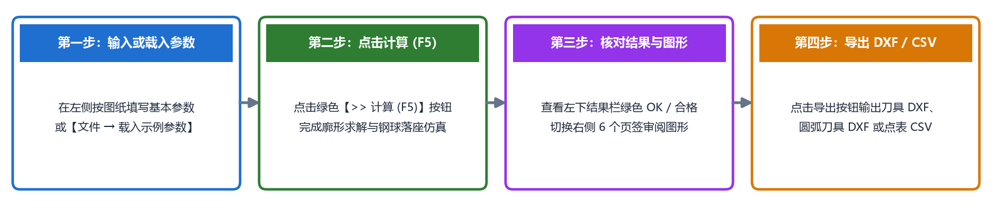

快速开始
欢迎阅读 TrackForm 快速开始章节！通过本章的学习，您将快速掌握软件的安装启动、主界面布局、核心交互方式，并在三分钟内完成您的第一次成型刀具设计与图纸导出。
本章内容导航
软件安装与启动
介绍 Windows 安装包（.msi）的安装与版本升级步骤、桌面快捷方式启动，以及用户默认数据文件夹（参数、导出文件与自动记忆配置）的存放位置。界面布局与基本操作
全面解析主界面的六大功能分区，介绍鼠标悬停查看参数示意图提示、不同截面类型下输入框的自动切换、状态栏颜色提示等贴心交互特性。三分钟快速上手
以标准椭圆球道零件（AC3300-G）为例，带您一步步走完“载入/确认参数 点击计算（F5） 核对计算结果与图形页签 导出 CAD 图纸与点表”的完整工作闭环。
